Fotografia · Editorial · Caminhada
Sequência Fotográfica do Bonfim
Projeto fotográfico e editorial que explora a caminhada como método de investigação, relação e produção de imagem no Bonfim, Porto.
Desenvolvido a partir de percursos pelo Bonfim, este projeto encara a caminhada não como um simples movimento entre lugares, mas como um método de investigação, atenção e relação com a cidade.
Enquanto recém-chegado ao Porto, o projeto tornou-se uma forma de construir significado através do encontro, dos vestígios, dos ritmos urbanos e da observação quotidiana, questionando a distância entre a imagem promovida da cidade e as realidades vividas pelos seus habitantes.
Processo
- Caminhada como método de investigação
- Captação fotográfica com câmara compacta
- Observação de resíduos urbanos e contradições
- Produção de imagem analógica a preto e branco
- Sequenciação editorial e reflexão teórica
Influenciado pelas ideias de Francesco Careri sobre a caminhada como prática estética, cada percurso começava sem um destino ou objetivo definidos. As imagens surgiam através da atenção ao que se tornava visível ao longo do caminho.
A utilização de película a preto e branco surge como resposta a uma certa fadiga digital, reunindo fragmentos heterogéneos da cidade numa sequência visual moldada pela memória, pelos resíduos, pela desordem e pela associação livre.
Referências
- Francesco Careri — Walkscapes
- Williams & Bendelow — The Lived Body
- Victor Burgin
- Georg Lukács
- Paul Smith · Bela Kralyfalui
Sequência de imagens
Seleção de imagens da sequência fotográfica desenvolvida no Bonfim, Porto.
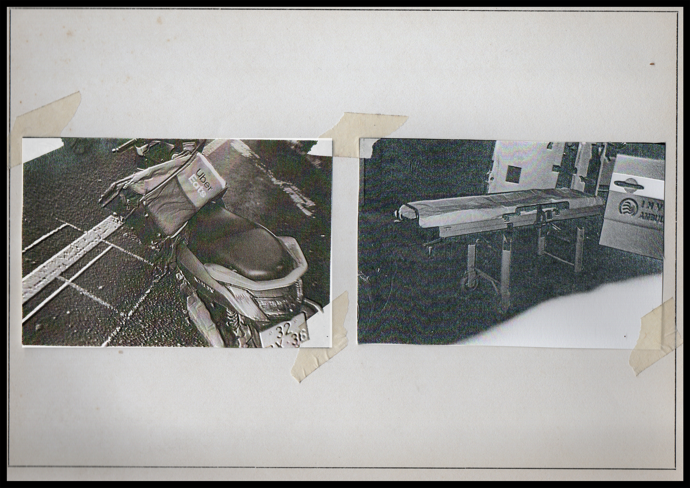
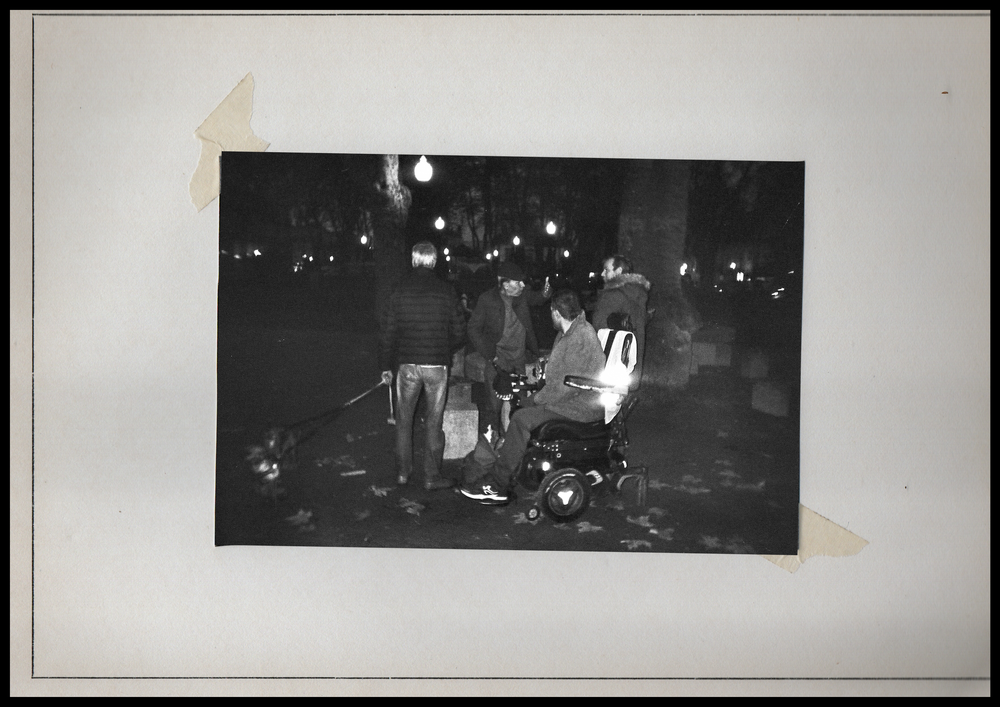
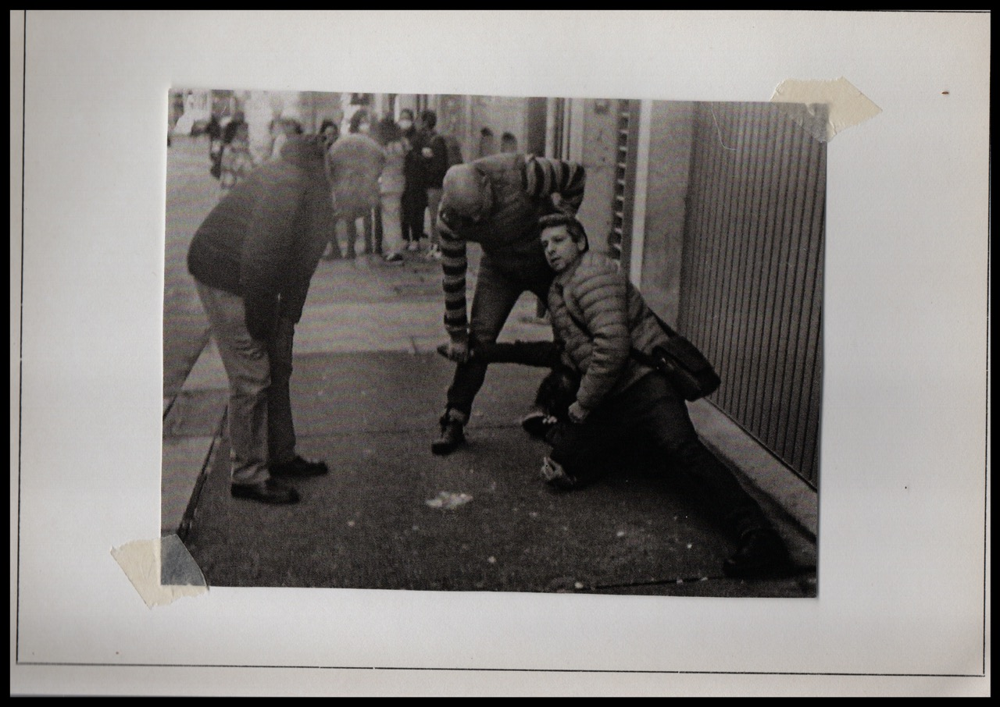
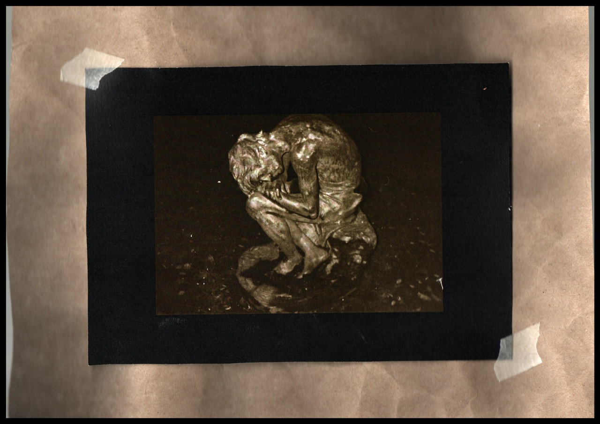
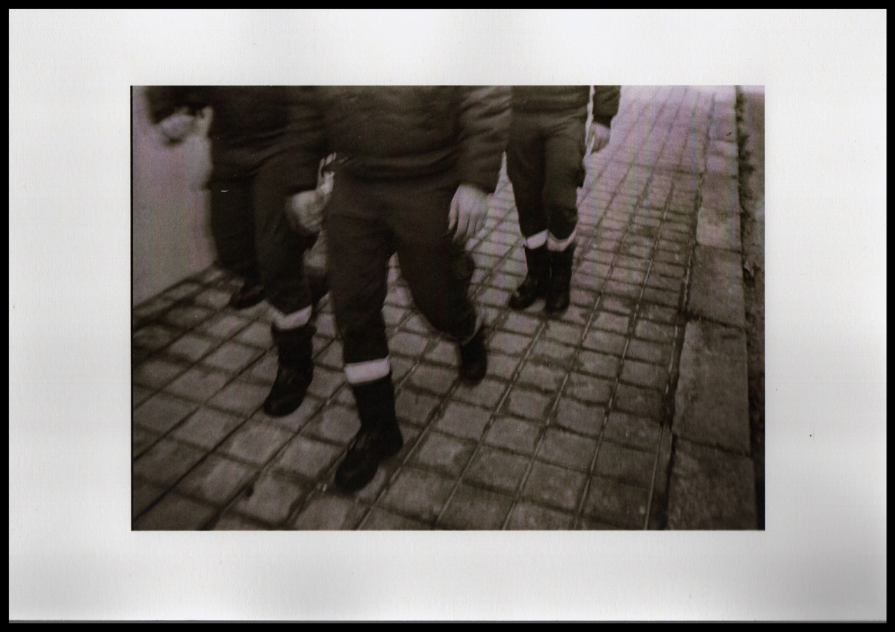
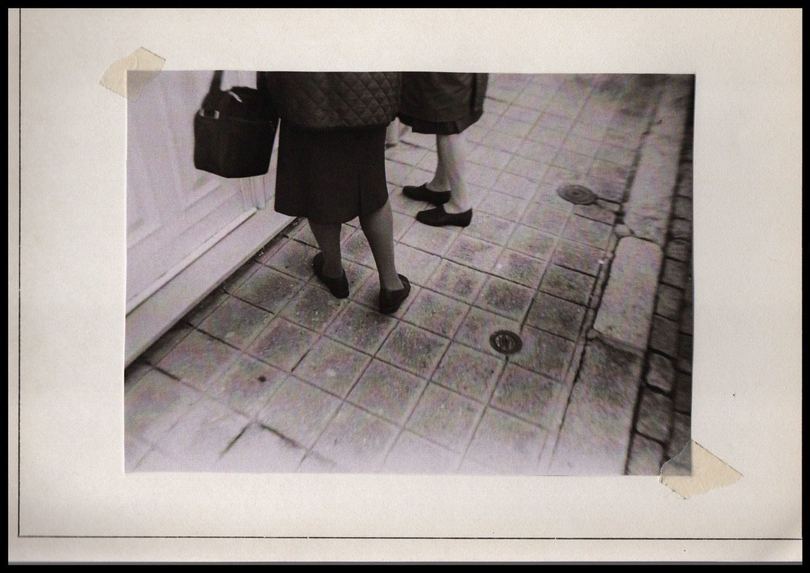
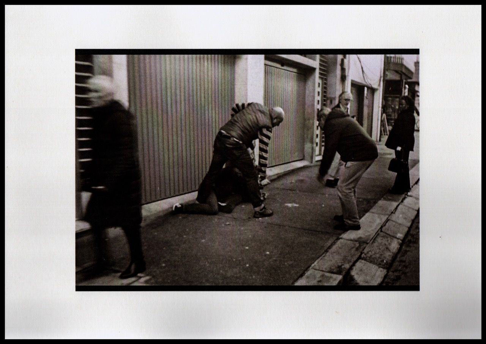
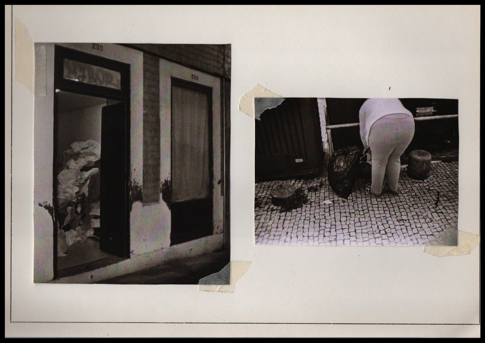
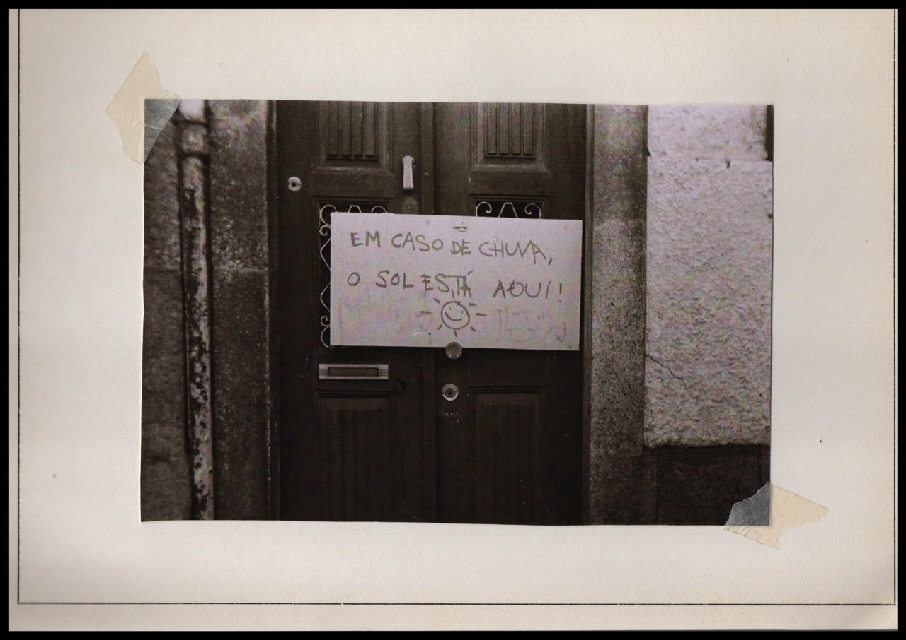
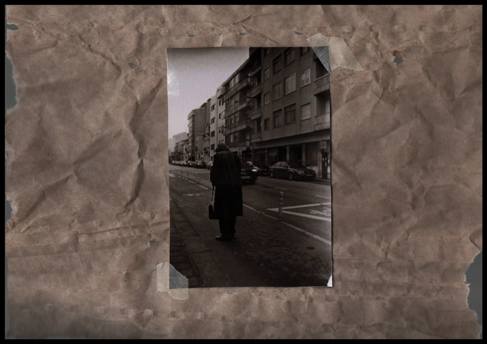
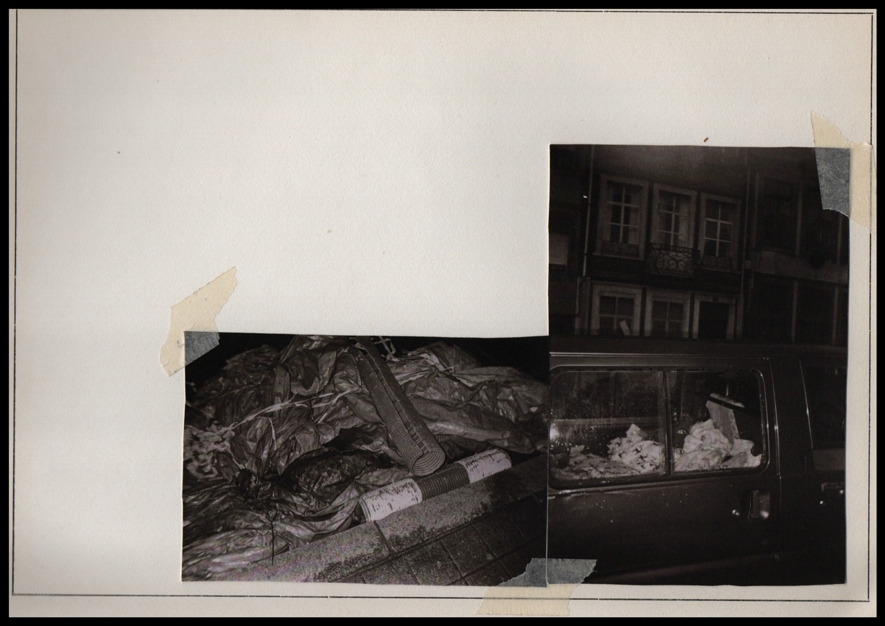